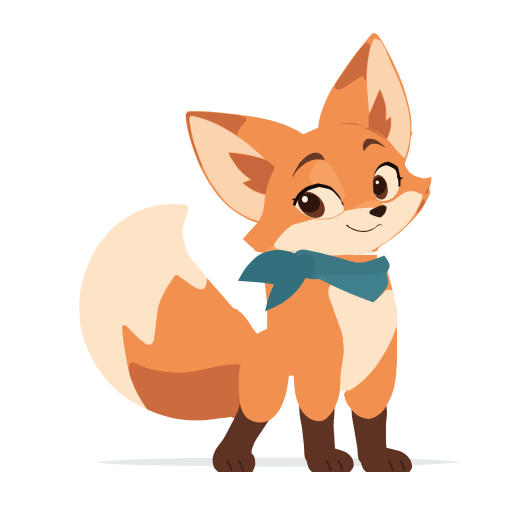
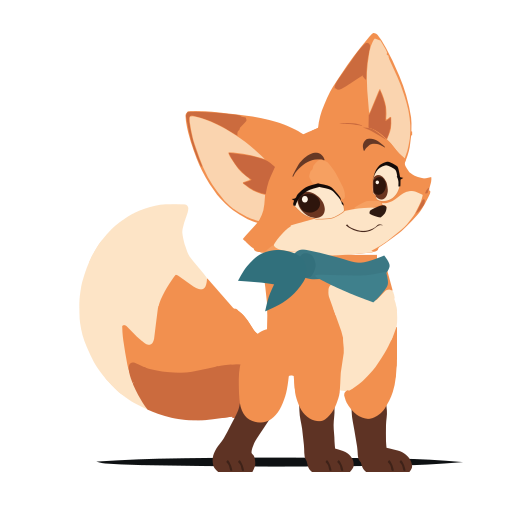

Had an apple and a coffee
Logged apple (1) and coffee with milk (1 cup). 130 kcal.
Dinner time?
Usual dinner540
Protein ideas?
Message Coach
Round 3 added the rich re-log chip, Duo screens at their true point sizes (closed 466×678 and open 951×669, with the system bar on the right), and only 2 chips on the closed Duo with Pip kept small. A filled ↑ sends a question. Every other chip fills the box for you to check. Round 4 applies the reviewer's second pass: a meal photo or a symbol in place of emoji, quieter kcal, labels of 18 characters or fewer, a cleaner closed Duo, 2 chips on the open Duo, and Pip's line kept to a mood so it never repeats Coach's reply.
Your own meal gets a round thumbnail and its kcal. The thumbnail is the meal's photo, cropped round, when there is one, and a fork-and-knife symbol when there isn't. Emoji are never used. The kcal is quieter, and the chip has a tint with no border. Tapping fills the box with the meal's foods, e.g. "For dinner I had grilled chicken, rice and salad", so you can tweak and send. Nothing is saved until you press Send.


The screen is short and wide, and the clock, camera and tabs live in the system bar on the right. Following your call, it shows 2 chips (one re-log and one question), Pip stays visible but small, the large title shrinks to an inline title, and today's kcal moves into the title row in place of the date line.
The chips belong to the Coach column, left of the crease, and never cross it. With the day on screen, "Calories left?" becomes "Was it balanced?". It shows 2 full chips with no fade, and the Today panel covers the rest.